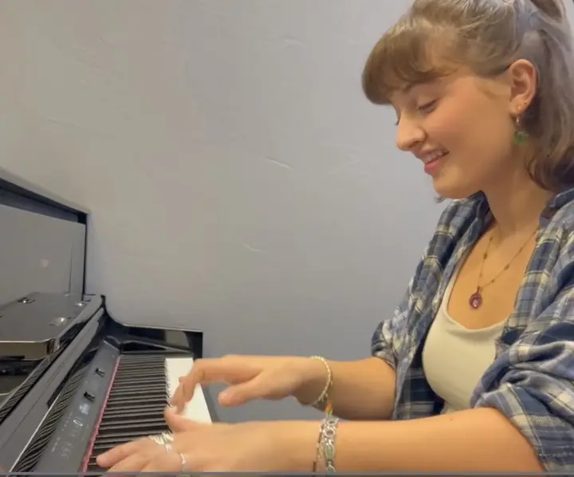

Now on tour Pride and Prejudice* *(sort of)
Emily Cruz
Actor-musician and artist
Cover Photo © YellowBellyPhoto
As of November 2026, Emily is in the UK tour of Pride and Prejudice* *(sort of), as 1st cover for Effie, Flo and Tillie.
The company
Credits
- 1st Cover: Effie, Flo, TilliePride and Prejudice* *(sort of) David Pugh, 2026. Directed by Isobel McArthur.
- Musical Director/EnsembleVinegar Tom Guildford School of Acting, 2026. Directed by Amy Wallace.
- DinoSaturday Night Guildford School of Acting, 2026. Directed by Simon Hardwick.
- Assistant MDThe All New Adventures of Peter Pan Evolution Productions, 2025. Directed by Will Kenning/Eoin Mallon.
- BonnieI Should Be So Lucky ATG Productions, 2025. Directed by Stuart Morley.
- Aunt GraceTom's Midnight Garden Guildford School of Acting, 2025. Directed by Cressida Carré.
- Keys 2Into The Woods Project Theatre Company, 2025. Directed by Owen White.
- MaraczekShe Loves Me Guildford School of Acting, 2025. Directed by Phyllida Crowley Smith.
- Juror 3Twelve Angry Men Guildford School of Acting, 2025. Directed by Anna Tringham.
- SiciniusCoriolanus Guildford School of Acting, 2024. Directed by Chris Palmer.


On screen
Showreels
Spotlight hosts these reels. Nothing is sent to Spotlight until you press play; then your browser loads Spotlight's player from mediaviewer.spotlight.com, which sees your IP address and may set its own cookies.
In performance
Photographs





Programme notes
Skills
Music
Alto (voice) Piano Accordion Guitar Bass guitar Double bass Alto saxophone Tenor saxophone Musical director
Dance
Commercial Jazz Tap Hip hop
Accents and dialects
Standard English RP Heightened RP Cockney West Country Northern Irish American: East Coast American: New York American: Southern States Portuguese Spanish
Languages
English Portuguese Spanish
Performance
Actor-musician Laban training
Other
Painting Crochet Knitting Cycling Field hockey Football Netball Swimming Car driving licence
- Playing age
- 15 to 25
- Height
- 5 ft 5 in (165 cm)
- Hair
- Light/mid brown, mid length
- Eyes
- Hazel
- Nationalities
- British, Portuguese
- Location
- Greater London
About the company
Trained at Guildford School of Acting
Guildford School of Acting, BA (Hons) Actor-Musician, 3 years, 2023 to 2026.
The 2026 BA (Hons) Actor-Musician graduates, on the GSA site
Representation
Galloways
For casting and all enquiries, please contact Emily's agent.
GallowaysHenry Wood House, 4-5 Langham Place
London W1B 3DG
020 7631 3134 or 07752 705359
agents@gallowaysagency.com